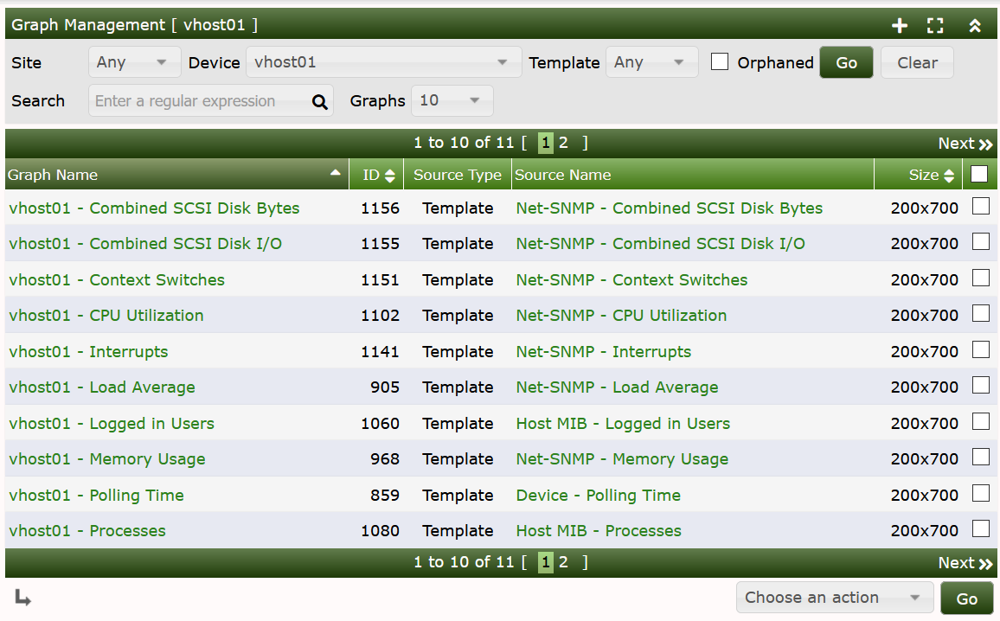
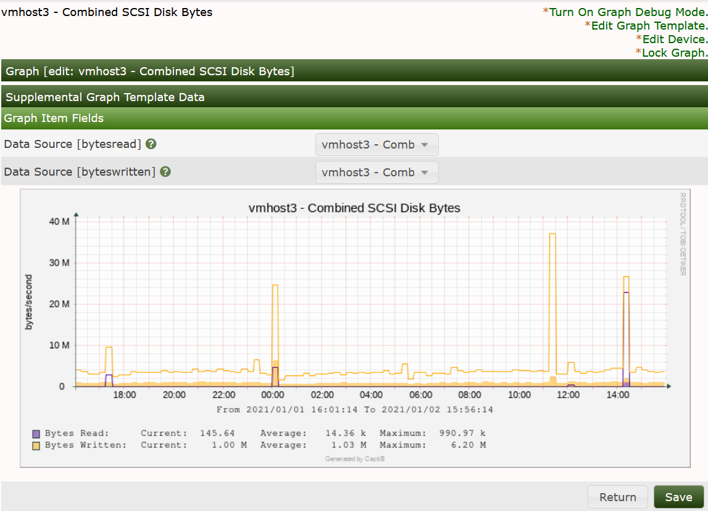
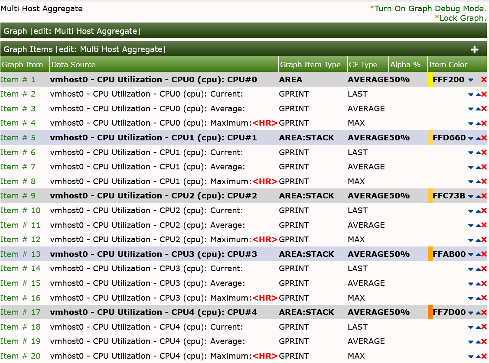
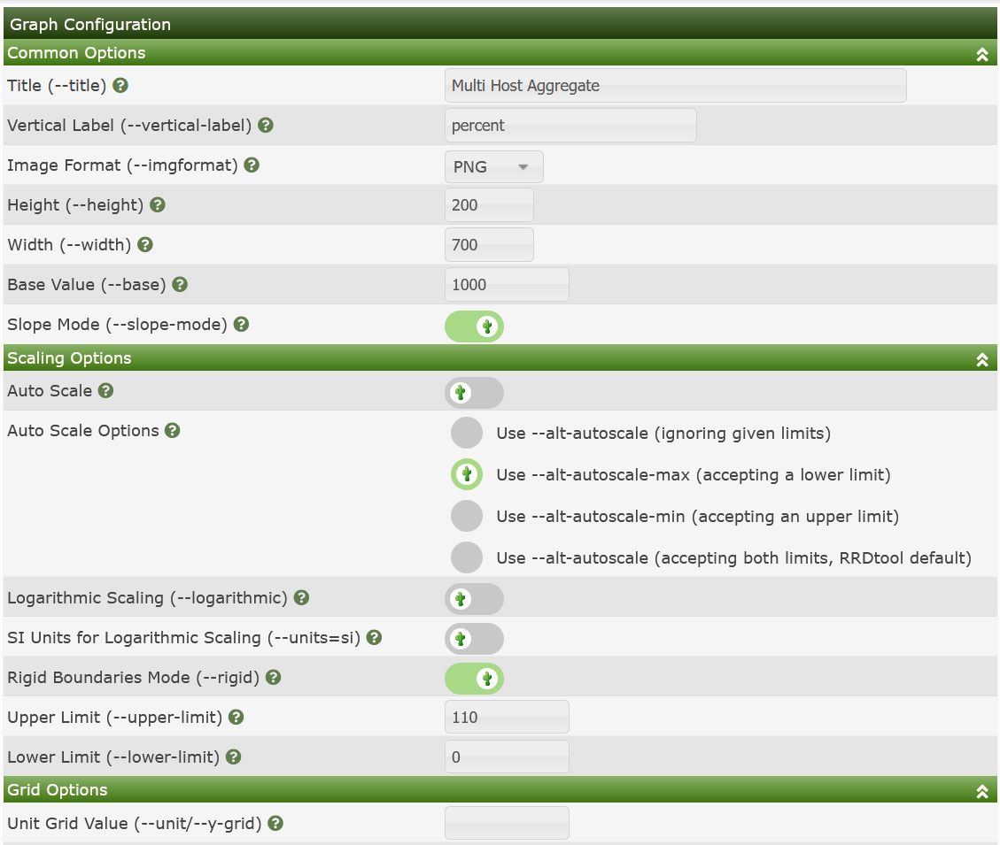

Almost everything in Cacti is somehow related to a Graph. At any time, you can list all available Graph by clicking on Console > Management > Graphs menu pick. While it is possible to manually create graphs through this interface, new users should follow the instructions provided in the next chapter for creating New Graphs in Cacti.
For users who are familiar with RRDtool, you will immediately recognize that a Graph in Cacti is closely modeled after RRDtool's graphs. This makes sense since Cacti provides a user friendly interface to RRDtool without requiring users to understand how RRDtool works. With this in mind, every Graph in Cacti has certain settings and at least one Graph Item associated with it. While graph settings define the overall properties of a Graph, the Graph Items define the data that is to be represented on the Graph. So the Graph Items define which data to display and how it should displayed, and also define what should be displayed on the legend.
Each Graph and Graph Item has a set of parameters which control various aspects of the Graph. Fortunately through the use of Graph Templates, it is not necessary to understand the function of each field to create Graphs for your network. When you are ready to take on the task of creating your own Graph Templates, extensive field descriptions for both Graphs and Graph Items are provided in that section of the manual.
Below, you can see a simple version of the Graph Management interface found by going to Console > Management > Graphs

From this interface, you can see the Name, and ID of the Graph, the Source Graph Template, and it's size. At the bottom of the page, there is a list of Action that can be taken on Graphs. These actions are fairly extensive, and are also extended as you add Plugins to Cacti.
When you click on the Name of the Graph, you will be taken to a Graph Edit page as shown below.

In most cases, where the Graph is owned by a Graph Template, there is not much your can do on this page. However, in the case that a Graph is not managed by a template as in the image below, there are many more options you will have when working with the Graph. The downside of not leveraging a Graph Template for your Graphs is that you have to duplicate the work for each Graph created.

When viewing a Non-Templated Graph, you have complete control of the Graphs Canvas and all the Graph Items as you would in a Graph Template, and the Graph Configuration as shown below.

The settings in both the Canvas and Configuration components of the Graph will be covered in the Graph Template section of the manual and not covered here.
Copyright (c) 2004-2024 The Cacti Group